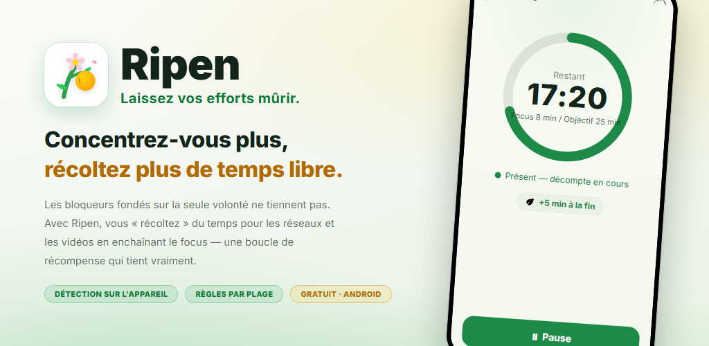
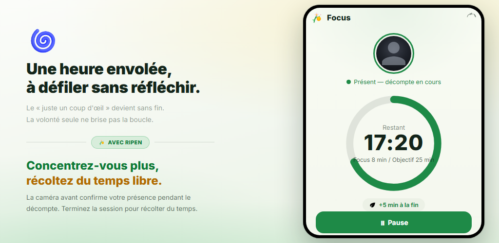
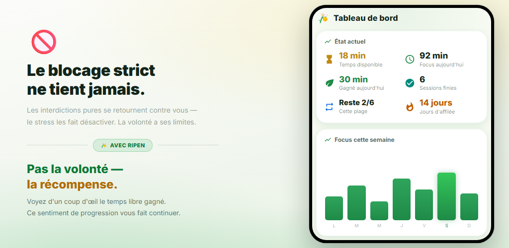
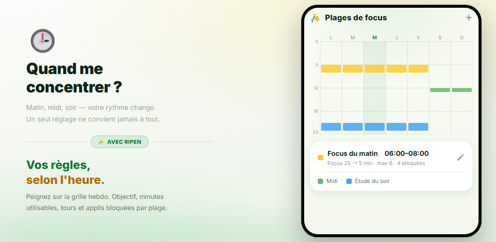
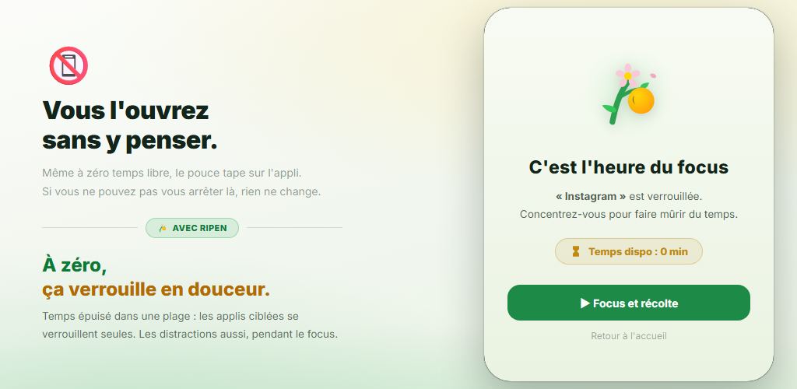
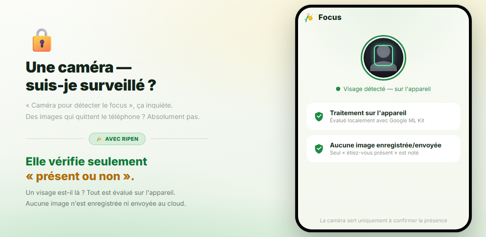

Boucle de récompense
Chaque fois que vous terminez un minuteur de focus, vous gagnez du temps pour les réseaux sociaux et les applis vidéo. Ce sont les récompenses, pas la volonté, qui changent votre comportement.
Les bloqueurs d’applis qui ne misent que sur la volonté ne tiennent pas. Ripen est une appli d’habitudes fondée sur la récompense : plus vous vous concentrez et étudiez, plus vous « récoltez » de temps pour les réseaux sociaux et les applis vidéo. La vérification de présence par la caméra se fait sur votre appareil, et vous pouvez la désactiver pour chaque plage horaire.
Android 8.0+ · Gratuit · Sans pub · Sans compte

Aucun réglage compliqué. Vous décidez seulement quand vous concentrer, combien de temps et combien de temps vous récupérez.
Coloriez la grille hebdomadaire pour choisir les jours et les heures où vous voulez vous concentrer
Avec la vérification de présence activée, la caméra frontale confirme que vous êtes là pendant le compte à rebours
Chaque tour terminé rapporte les minutes que vous avez fixées (un quiz de mots fonctionne aussi)
À 0 minute restante, les applis choisies sont bloquées en douceur
Dans les plages où la vérification de présence est activée, le minuteur de focus n’avance que lorsque votre visage est devant l’écran. Atteignez l’objectif et vous gagnez les minutes fixées pour les réseaux sociaux ou les applis vidéo. Un tour abandonné en cours de route ne rapporte rien.

Voyez d’un coup d’œil le temps disponible, le focus du jour, les gains du jour et vos jours d’affilée. Les graphiques de tendance hebdomadaire et mensuelle et une carte thermique par heure révèlent quand vous vous concentrez le mieux.

Il suffit de colorier la grille hebdomadaire pour définir les jours et les heures où vous voulez vous concentrer. Chaque plage a son propre objectif de focus, ses minutes par tour, sa limite de tours, ses applis bloquées et sa vérification de présence par caméra. En dehors des plages, vous êtes libre.

Une fois le temps d’une plage épuisé, ouvrir l’une des applis choisies affiche un écran de blocage. Les applis qui distraient sont aussi verrouillées pendant les sessions de focus. Et le « verrou des réglages » vous empêche d’assouplir les règles plus tard.

Un simple minuteur continue de tourner même si vous partez. Ripen utilise la caméra frontale uniquement pour savoir si un visage est devant l’écran, et ce sur votre appareil. Aucune image n’est enregistrée ni envoyée. Vous pouvez aussi choisir des plages sans caméra.

Découvrez comment vous vous concentrez, récoltez du temps et voyez vos applis se verrouiller une fois ce temps épuisé.
Renversez le « je veux arrêter mais je n’y arrive pas », grâce aux récompenses.
Chaque fois que vous terminez un minuteur de focus, vous gagnez du temps pour les réseaux sociaux et les applis vidéo. Ce sont les récompenses, pas la volonté, qui changent votre comportement.
La caméra frontale détermine seulement si vous êtes devant l’écran. Le traitement se fait sur votre appareil et aucune image n’est enregistrée ni envoyée. Vous pouvez la désactiver pour chaque plage.
Définissez plusieurs plages par jour et par heure. Chaque plage a son propre objectif de focus, ses minutes, sa limite de tours et ses applis bloquées.
Répondez correctement à un nombre fixé de quiz de vocabulaire anglais (4 choix) pour gagner un tour. Environ 10 000 mots classés par niveau CEFR, avec test de niveau, liste de révision et vos propres paquets.
Des minutes utilisables dès le début d’une plage, avant même de vous concentrer. Elles s’ajoutent à vos récompenses de focus.
Une fonction d’engagement qui vous empêche de bidouiller les réglages pour obtenir plus de loisir. Les changements qui assouplissent les règles exigent de planifier un déverrouillage et d’attendre de 1 à 30 jours.
Tendances de focus, calendrier de focus, taux de réussite, vos meilleures heures de concentration et évolution de l’usage des applis bloquées : tout est visualisé.
Sans ouvrir l’appli, une notification permanente affiche le temps disponible, la prochaine plage de focus et le temps restant de votre session. En fin de session, un son et une vibration vous préviennent.
Choisissez le thème Système, Clair ou Sombre. L’appli est disponible en 12 langues, dont le français, l’anglais et le japonais.
« Une caméra pour vérifier la concentration », cela peut inquiéter. Ripen est conçue avec la confidentialité comme priorité.
La détection de présence du visage s’effectue sur votre appareil avec Google ML Kit. La vidéo n’est jamais envoyée à un serveur externe.
Elle détermine seulement si un visage est là. Les photos et vidéos ne sont jamais enregistrées ni envoyées. Elle ne consigne que le nombre de secondes où vous étiez présent et concentré.
Les historiques de focus et les réglages sont stockés sur votre appareil et ne sont jamais envoyés aux serveurs de Ripen. Si la sauvegarde Android est activée, vos réglages sont inclus dans la sauvegarde de votre compte Google et restaurés lors d’une réinstallation.
Ni inscription ni connexion, et aucune publicité ni outil d’analyse intégré. Téléchargez-la et commencez tout de suite.
Téléchargez-la sur Google Play